50+기업·기관·대학 출강
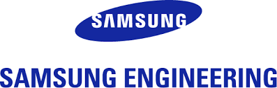
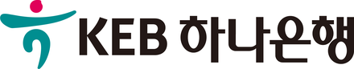
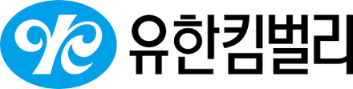
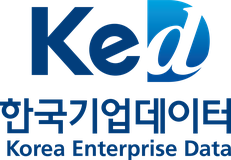
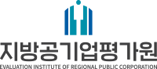
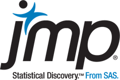
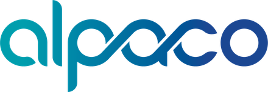

Why now
AX는 AI 도구를 들이는 일이 아니라,
데이터를 읽는 사람을 키우는 일입니다.
DX 시기에 기업은 ERP·MES·CRM을 도입하며 데이터를 쌓았습니다. AX 단계에서는 그 데이터를 AI가 학습하고, 사람이 그 결과로 판단합니다. 문제를 정의하고 데이터를 해석할 수 있는 구성원이 없으면, AI 도입은 PoC에서 멈춥니다.
DX
- 종이·수기 업무의 전산화
- ERP·MES·CRM 등 시스템 구축
- 데이터의 축적과 조회
- IT 부서 중심의 추진
AX
- 축적된 데이터로 AI가 예측·판단을 보조
- 생성형 AI·LLM이 업무 흐름 안으로
- 현업이 직접 분석하고 AI를 활용
- 모든 직무에 데이터 리터러시가 전제
문제 정의가 먼저입니다
AI 프로젝트가 멈추는 가장 흔한 이유는 모델이 아니라 잘못 정의된 과제입니다. 현업의 문제를 KPI와 데이터로 바꾸는 방법론부터 다룹니다.
현업이 직접 분석해야 빨라집니다
외주 분석은 끝나면 남는 것이 적습니다. 구성원이 Python·통계·머신러닝으로 스스로 분석하고, AI 도구로 서비스까지 만들 수 있도록 역량을 내재화합니다.
실제 데이터로 배워야 현장에서 씁니다
예제용 토이 데이터가 아니라 제조 공정, 금융 여신·수신, 의료영상처럼 산업 현장의 데이터를 가공한 실습으로 진행합니다.
Formats
3일 특강부터 6개월 KDT까지,
기간과 목표에 맞춰 설계합니다.
기업의 직무와 데이터 환경을 먼저 진단한 뒤, 검증된 강의 모듈을 조합해 커리큘럼을 만듭니다. K-디지털 트레이닝(KDT) 과정 설계와 운영도 가능합니다.
데이터 분석·생성형 AI 입문, 직무별 핵심 실습
Python 데이터 분석부터 LLM·컴퓨터 비전까지 10일 구성
의료영상 CV·자연어 처리 등 도메인 특화 심화
970시간 · 데이터 분석부터 서비스 기획·구현 프로젝트까지
What we do
교육과 컨설팅, 하나의 방법론으로
컨설팅 현장에서 쓰는 문제해결 방법론을 그대로 교육 과정에 옮기고, 교육에서 다듬은 실습을 다시 컨설팅에 적용합니다.
Built by Data Station
가르치는 것을, 직접 만들어 봅니다.
강의에서 다루는 모형과 방법론을 실제로 동작하는 서비스로 구현해 공개하고 있습니다.
Machine Learning & AI 모형 시뮬레이터Made by DS
머신러닝·신경망·컴퓨터 비전·자연어 처리·시계열·멀티모달·강화학습 모형을 브라우저에서 직접 조작하며 계산 과정을 한 단계씩 따라가는 실습 도구
나스닥 AI 분석 리포트Made by DS
14개 AI 에이전트가 나스닥 시가총액 상위 200개 종목을 분석해 주 2회 발행하는 멀티 에이전트 리포트 아카이브
웹툰 데이터 분석 대시보드Made by DS
공개 웹툰 데이터를 수집해 작품별 기술 통계와 회차별 독자 반응을 분석하는 대시보드 예시
유튜브 데이터 스테이션 채널
데이터 분석과 AI를 현업 관점에서 풀어내는 강의 콘텐츠
In the field
강의실에서, 현장에서
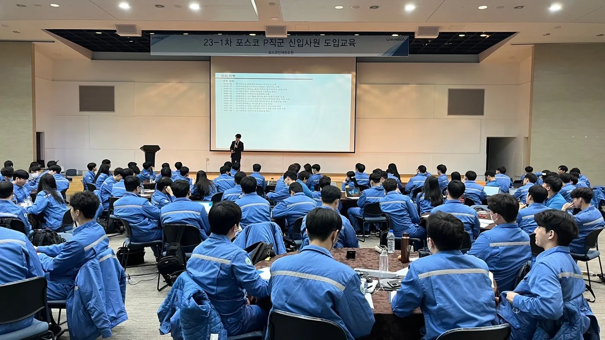
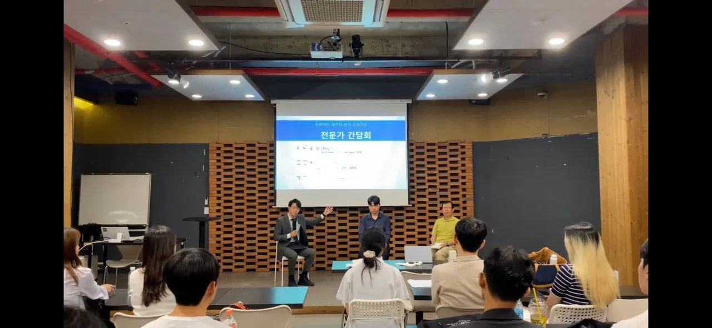
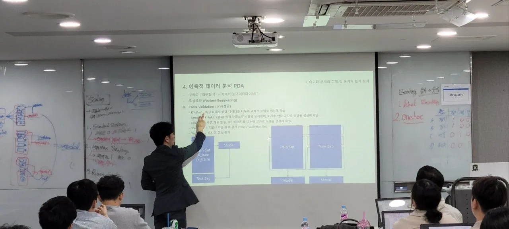
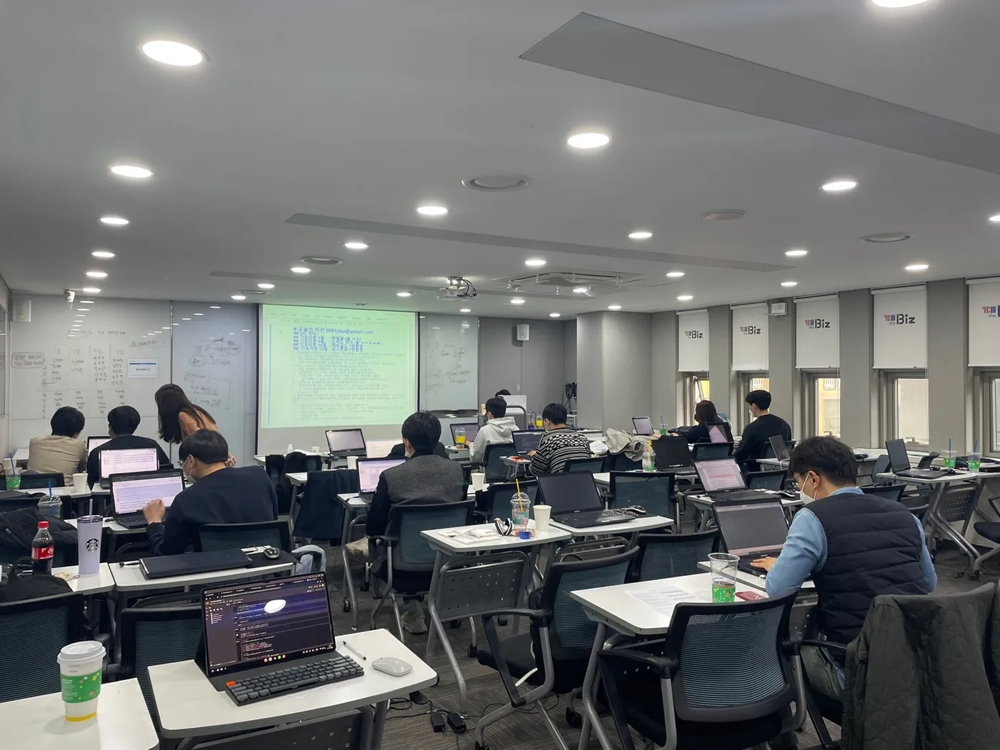
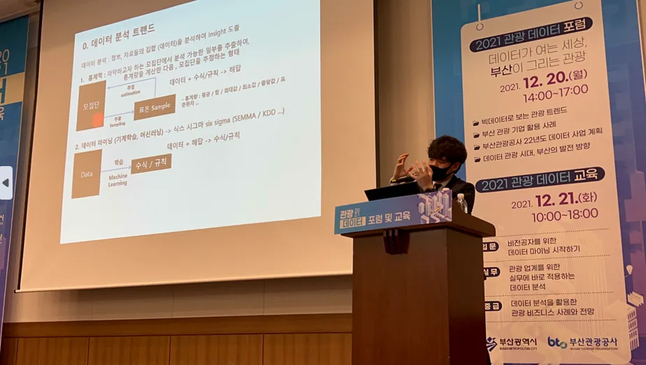
Clients & Partners
함께한 기업과 기관
그 외 삼성멀티캠퍼스 · 현대제철 · 현대글로비스 · 현대트랜시스 · 한국산업은행 · 한국수력원자력 · LH · 국토교통부 · 중소벤처기업진흥공단 · 연세대학교 · 중앙대학교 · 울산대학교 등 50여 개 기업·기관·대학에서 강의했습니다.
우리 조직에 맞는 과정이 궁금하다면
교육 대상, 기간, 목표를 알려 주시면 커리큘럼 초안을 제안드립니다.